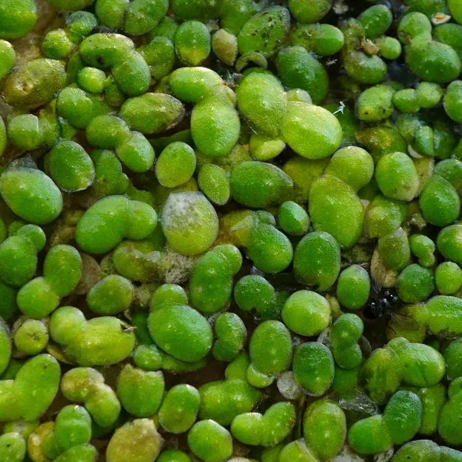

水生植物 · 植物界
浮萍 Lemna minor

天南星科微小漂浮水生植物，叶状体只有几毫米，是已知最小的开花植物之一，繁殖极快，可用于净化水质。
- 分类
- 门被子植物门纲木兰纲目泽泻目科天南星科属浮萍属
- 栖息环境
- 池塘、沟渠、水田等静水水面，喜温暖、富营养水体
- 地理分布
- 广布于全球温带至热带淡水域，中国各地常见
- 保护级别
- 暂无评估
物种志
浮萍为天南星科浮萍属微小漂浮水生草本，植株由扁平的叶状体组成，叶状体椭圆形或倒卵形，长 1–5 毫米，绿色，背面有一条细根悬于水中。花极小，着生于叶状体边缘的囊中，雌雄同株，花期少见；果实为卵形胞果，种子有纵纹。
浮萍分布几乎遍及全球的池塘、沟渠和水田，喜温暖、阳光充足、富含氮磷的静水，繁殖方式以叶状体分裂为主，条件适宜时 2–3 天就能翻一倍。它是已知最小的开花植物之一，花小到需要用放大镜才能观察。浮萍能大量吸收水中的氮、磷和重金属，被用于污水净化和生态修复试验，也可作鸭、鱼饲料和生物质能源原料；冬季它会形成休眠芽沉入水底越冬。
形态与习性
- 株高叶状体长 1–5 毫米
- 花期少见，极微小，生于叶状体边缘
- 果期胞果卵形，种子有纵纹
- 光照喜充足阳光，半阴也可生长
- 水分漂浮于静水或缓流水面
- 土壤不依赖土壤，直接吸收水中养分
- 繁殖叶状体分裂繁殖，极快
- 主要用途净化水质、饲料、生物质研究
趣味知识
- 浮萍是已知最小的开花植物之一，叶状体只有几毫米长，花小到需用放大镜观察。
- 在适宜条件下，浮萍约 2–3 天就能分裂繁殖一倍，生长速度极快。
- 浮萍能吸收水中的氮、磷和重金属，被用于污水净化和生态修复试验。
- 冬季浮萍会形成休眠芽沉入水底，待来年温度回升再浮到水面。